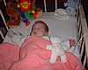

13th October 2001
Poppy had her immunisations this afternoon and coped with them very well - she has had no ill effects since they were given.
12th October 2001
Poppy didn't have her immunisations today, because they weren't organized. She will have some of them tomorrow. She has been very alert today and only slept for about an hour before going to sleep at 3 o'clock. She fed well this evening before going to sleep. She now weighs 6lb 13oz.
11th October 2001
Poppy has had another good day. She has been given a provisional date of Tuesday to come home if she manages to stay off oxygen until then - she has to be off for a week before she can come home. She will be given a flu jab and her third set of immunizations tomorrow, so if she can get through that, we think she'll be fine.
10th October 2001
Poppy continues to do well. Aeryn has started to kiss her a lot now, and spent a good deal of time this morning touching her and reaching over to kiss her in her cot.
9th October 2001
Poppy now weighs 6lb 10oz and seems extremely well. She still remains happy on air and comments about her coming home soon have started to be heard. She will need to remain off of oxygen for a further 5 days before we will be allowed home.
8th October 2001
Poppy has been off of oxygen since 8am yesterday, with a couple of puffs during her Sunday feeds. She looks extremely well and enjoyed another walk around the Unit after breakfast. She is four months old today.

7th October 2001
Poppy has had a good day today. She has been on air all afternoon and is still on air this evening.